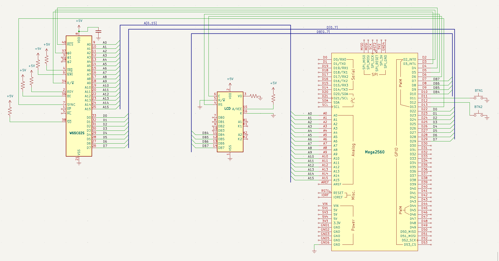

LCD-display
Mål
Datorn fungerar — men all feedback går via seriemonitorn på en laptopen. Nu kopplar vi in en LCD-display (16×2 tecken) som visar vad CPU:n gör direkt på kopplingsdäcket. Ingen datorskärm behövs längre.
LCD:n kopplas i 4-bitars parallellt läge till Arduino. Det innebär att vi skickar data 4 bitar i taget via pinnar D7–D10. Arduino-biblioteket LiquidCrystal sköter all kommunikation — vi behöver bara tala om vilka pinnar som används.
Viktig detalj: datapinnarna är i omvänd ordning. Arduino D10 går till LCD DB4, D9 till DB5, D8 till DB6, D7 till DB7. Koden måste spegla detta:
LiquidCrystal lcd( 5, // RS 6, // E 10, // DB4 9, // DB5 8, // DB6 7 // DB7 );
LCD:ns R/W-pinne kopplas till GND — vi ska bara skriva till displayen, aldrig läsa.
Nya komponenter
En 16×2 LCD-display, en 10 kΩ-potentiometer för kontrast och ett 220Ω-motstånd för bakgrundsbelysningen. Med dessa ser du vad CPU:n gör direkt på kopplingsdäcket — datorn blir fristående från datorskärmen.
| Antal | Komponent |
|---|---|
| 1 | 16×2 (parallell, t.ex. QC1602A) |
| 1 | 10 kΩ potentiometer (kontrast) |
| 1 | 220 Ω motstånd (bakgrundsbelysning) |
Kopplingsschema
Schemat visar LCD-displayen ansluten i 4-bitarsläge: RS till D5, E till D6, och datapinnarna DB4–DB7 till D10, D9, D8, D7 i omvänd ordning. Potentiometern sitter på VO för kontrast och 220Ω-motståndet matar bakgrundsbelysningen. Resten av datorn är oförändrad.

LCD 16×2 — pinout
16-pin SIL (single in-line). Pin 1 är närmast kanten på de flesta moduler. Justera kontrasten med potentiometern på VO (pin 3).
■ Kontroll ■ Data ■ Ström ■ Kontrast. I 4-bitarsläge används endast DB4–DB7 (pin 11–14).
Kopplingar
Här är hela kopplingen inklusive LCD:ns 16 pinnar, markerade med egen radgrupp i tabellen. Datapinnarna DB4–DB7 går i omvänd ordning (D10→DB4, D9→DB5…) — en klassisk fallgrop när du kopplar, så dubbelkolla varje ledning mot tabellen.
| Pin | Signal | Kopplas till | Varför |
|---|---|---|---|
| 8 | VDD | +5V | Strömmatning — CPU:ns driftspänning |
| 21 | VSS | GND | Systemjord — sluten krets |
| 37 | PHI2 | Arduino D2 | Klockingång — Arduino skickar fyrkantsvåg |
| 2 | RDY | +5V via 10kΩ | Ready — HÖG = CPU får köra. Utan denna stannar CPU:n |
| 4 | /IRQ | +5V via 10kΩ | Interrupt request — HÖG = inget avbrott |
| 6 | /NMI | +5V via 10kΩ | Non-maskable interrupt — måste vara HÖG |
| 36 | BE | +5V via 10kΩ | Bus Enable — HÖG = bussarna aktiva. Utan denna är CPU:n bortkopplad! |
| 38 | /SO | +5V via 10kΩ | Set Overflow — avaktiverad |
| 40 | /RESET | Arduino D4 | Kontrollerad reset — Arduino håller CPU:n i reset tills vi är redo |
| 9–16 | A0–A7 | Arduino A0–A7 | Låga adressbyte — läses via PORTF |
| 17–20, 22–25 | A8–A15 | Arduino A8–A15 | Höga adressbyte — läses via PORTK |
| 34 | R/W | Arduino D3 | HÖG = CPU läser, LÅG = CPU skriver. Arduino måste veta detta |
| 33 | D0 | Arduino D22 via 100Ω | Databit 0 (LSB) |
| 32 | D1 | Arduino D23 via 100Ω | Databit 1 |
| 31 | D2 | Arduino D24 via 100Ω | Databit 2 |
| 30 | D3 | Arduino D25 via 100Ω | Databit 3 |
| 29 | D4 | Arduino D26 via 100Ω | Databit 4 |
| 28 | D5 | Arduino D27 via 100Ω | Databit 5 |
| 27 | D6 | Arduino D28 via 100Ω | Databit 6 |
| 26 | D7 | Arduino D29 via 100Ω | Databit 7 (MSB) |
| 7 | SYNC | Arduino D13 | HÖG = CPU:n hämtar första byten av ny instruktion |
| LCD 16×2 (parallell 4-bit) | |||
| 1 | VSS | GND | Jord |
| 2 | VDD | +5V | Strömmatning |
| 3 | VO | Potentiometer mittben | Kontrast — sidoben till +5V och GND |
| 4 | RS | Arduino D5 | Register Select — 0 = kommando, 1 = data |
| 5 | R/W | GND | Alltid skrivläge — vi läser aldrig från LCD:n |
| 6 | E | Arduino D6 | Enable — Arduino pulserar för att skicka data |
| 11 | DB4 | Arduino D10 | Data bit 4 — omvänd ordning! |
| 12 | DB5 | Arduino D9 | Data bit 5 |
| 13 | DB6 | Arduino D8 | Data bit 6 |
| 14 | DB7 | Arduino D7 | Data bit 7 |
| 15 | A | +5V via 220Ω | Bakgrundsbelysning + |
| 16 | K | GND | Bakgrundsbelysning − |
Arduino-kod
Hittills har all feedback från datorn gått via seriemonitor på en laptop. Det fungerar, men det känns inte som en riktig dator. Nu kopplar vi in en LCD-display direkt på kopplingsdäcket — och vips är datorn fristående. Ingen PC krävs för att se vad CPU:n gör.
LCD i 4-bitarsläge — att prata med displayen
LCD-displayer med HD44780-kontroller (standard för 16×2 och 20×4) kan köras i två lägen: 8-bitars (alla 8 datapinnar används) eller 4-bitars (endast DB4–DB7). Vi använder 4-bitarsläget för att spara pinnar på Arduino. Arduino-biblioteket LiquidCrystal hanterar all kommunikation — vi behöver bara tala om vilka pinnar som används, och som vi såg i Mål-avsnittet speglar konstruktorn den omvända pin-ordningen.
Om din display har rak ordning (D7→DB4 osv.) måste du ändra ordningen i konstruktorn. LCD:ns R/W-pinne (pin 5) kopplas till GND — vi skriver bara till displayen, vi läser aldrig från den.
LCD-uppdatering inuti pulse()
Den stora kodändringen sitter i pulse(). Efter varje klockcykel uppdateras LCD:n:
- Rad 0: visar aktuell adress i formatet
A:$8000. Padding med mellanslag håller displayen ren när adressen växlar mellan olika längder. - Rad 1: visar data på databussen i formatet
D:$EA. Enstaka hex-siffror paddas med en nolla för jämn bredd.
setup() initierar LCD:n med lcd.begin(16, 2) och skriver en välkomsttext. loop() är oförändrad från steg 4 — knapparna fungerar precis som tidigare, men nu ser du resultatet både i seriemonitor och på displayen.
Vad som är nytt jämfört med steg 4
LCD-display, 10kΩ-potentiometer för kontrast, och 220Ω för bakgrundsbelysningen. I koden: #include <LiquidCrystal.h>, LCD-objektet, och lcd.print()-anropen i pulse(). Det är allt — resten är samma beprövade minnesemulator som tidigare.
// ==============================================================
// Steg 5 — LCD-display (parallell 4-bit till Arduino)
// ==============================================================
// LCD 16×2 kopplas direkt till Arduino. Adress och data visas
// i realtid — ingen datorskärm behövs för att se vad CPU:n gör.
// Datapinnarna är i omvänd ordning (D10→DB4, D9→DB5...).
#include <Arduino.h>
#include <LiquidCrystal.h>
// --- Pindefinitioner ---
#define PHI2 2 // Arduino D2 → CPU pin 37
#define RESB 4 // Arduino D4 → CPU pin 40
#define RWB 3 // Arduino D3 → CPU pin 34
#define SYNC 13 // Arduino D13 → CPU pin 7
#define BTN_CLK 11 // Knapp 1: en klockcykel (D11 → GND)
#define BTN_INSTR 12 // Knapp 2: en instruktion (D12 → GND)
#define CLOCK_HZ 500 // Klockfrekvens i Hz
#define CLOCK_DELAY (1000 / (CLOCK_HZ * 2)) // ms per klockfas
// --- LCD-konfiguration ---
// RS=D5, E=D6, DB4=D10, DB5=D9, DB6=D8, DB7=D7
// Notera: datapinnarna är i omvänd ordning!
LiquidCrystal lcd(5, 6, 10, 9, 8, 7);
// --- Minnesarrayer ---
uint8_t ram[1024]; // $0000–$03FF
uint8_t vectors[6]; // $FFFA–$FFFF
// --- read_mem() — slå upp minnesvärde ---
uint8_t read_mem(uint16_t addr) {
if (addr >= 0xFFFA && addr <= 0xFFFF) return vectors[addr - 0xFFFA];
if (addr < 1024) return ram[addr];
return 0xEA; // Fallback: NOP
}
// --- write_mem() — spara minnesvärde ---
void write_mem(uint16_t addr, uint8_t val) {
if (addr >= 0xFFFA && addr <= 0xFFFF)
{ vectors[addr - 0xFFFA] = val; return; }
if (addr < 1024) ram[addr] = val;
}
// --- pulse() — en klockcykel + LCD-uppdatering ---
// Samma minnesemulering som tidigare, men nu uppdateras LCD:n
// efter varje cykel så du ser vad CPU:n gör i realtid.
void pulse() {
digitalWrite(PHI2, LOW);
delay(CLOCK_DELAY);
uint16_t a = (PINF << 0) | (PINK << 8);
bool rw = digitalRead(RWB);
uint8_t data = 0;
if (rw) { DDRA = 0xFF; PORTA = read_mem(a); data = PORTA; }
else { DDRA = 0x00; }
digitalWrite(PHI2, HIGH);
delay(CLOCK_DELAY);
if (!rw) { data = PINA; write_mem(a, data); }
// --- Uppdatera LCD ---
// Rad 0: aktuell adress (t.ex. "A:$8000")
lcd.setCursor(0, 0);
lcd.print("A:$"); lcd.print(a, HEX);
if (a < 0x1000) lcd.print(" "); // Padning för snygg visning
if (a < 0x100) lcd.print(" ");
lcd.print(" ");
// Rad 1: data på databussen (t.ex. "D:$EA")
lcd.setCursor(0, 1);
lcd.print("D:$");
if (data < 0x10) lcd.print("0"); // Padning för snygg visning
lcd.print(data, HEX);
lcd.print(" ");
}
// --- setup() — initiera LCD, ladda program, starta CPU ---
void setup() {
Serial.begin(115200);
pinMode(PHI2, OUTPUT);
pinMode(RESB, OUTPUT);
pinMode(RWB, INPUT);
pinMode(SYNC, INPUT);
pinMode(BTN_CLK, INPUT_PULLUP); // Intern pull-up, knapp till GND
pinMode(BTN_INSTR, INPUT_PULLUP);
DDRK = 0x00; DDRF = 0x00; DDRA = 0x00;
// Initiera LCD — 16 tecken, 2 rader
lcd.begin(16, 2);
lcd.print("W65C02S Steg 5");
// Ladda NOP-program (samma som steg 3–4)
write_mem(0xFFFC, 0x00);
write_mem(0xFFFD, 0x80);
write_mem(0x8000, 0xEA);
Serial.println("Steg 5 — LCD-display");
// Reset-sekvens
digitalWrite(RESB, LOW);
for (int i = 0; i < 5; i++) pulse();
digitalWrite(RESB, HIGH);
}
// --- loop() — knappstyrning, samma som steg 4 ---
// Knapp 1: en klockcykel. Knapp 2: kör till nästa instruktion.
void loop() {
if (!digitalRead(BTN_CLK)) {
delay(50); while (!digitalRead(BTN_CLK)); delay(50);
pulse();
}
if (!digitalRead(BTN_INSTR)) {
delay(50); while (!digitalRead(BTN_INSTR)); delay(50);
do { pulse(); } while (!digitalRead(SYNC));
}
}
Exempel på körning
Direkt efter uppladdning visar både seriemonitor och LCD-displayen att allt är redo:
Seriemonitor (115200 baud)
Steg 5 — LCD-display
LCD-displayen
När du trycker på Knapp 1 (klocksteg) uppdateras båda vyerna samtidigt. Seriemonitor loggar varje minnesaccess, LCD:n visar adress och data i realtid:
Seriemonitor — efter 4 tryck på Knapp 1
Steg 5 — LCD-display R $FFFC R $FFFD R $8000 R $8001
LCD-displayen — efter 4 tryck
Samma information på båda ställena — adress ($8001) och data ($EA, NOP). Skillnaden är att LCD:n visar just nu medan seriemonitor bygger en historik. Med Knapp 2 (instruktionssteg) ser du flera rader i seriemonitor per tryck medan LCD:n uppdateras för varje klockcykel — ett snabbt flimmer av adresser tills SYNC går hög.
Datorn har blivit fristående. Du kan koppla bort USB-kabeln (om Arduino drivs via DC-adaptern) och fortfarande stega genom programmet och se allt på LCD:n. Seriemonitor är praktisk för att logga och felsöka, men displayen på kopplingsdäcket gör datorn till en egen, komplett enhet.
Om det inte fungerar
Här är några saker att kontrollera:
- Helt tom skärm? Justera kontrasten med potentiometern. Testa båda ytterlägena.
- Svarta rutor på första raden? LCD:n är i 8-bitarsläge men får ingen data. Kontrollera att
lcd.begin(16,2)körs. - Förvrängda tecken? Datapinnarna är i fel ordning. Prova
LiquidCrystal lcd(5, 6, 7, 8, 9, 10)om din display har rak ordning. - Ingen bakgrundsbelysning? Kontrollera 220Ω till A (pin 15) och GND till K (pin 16).